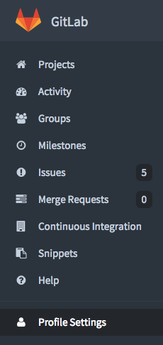
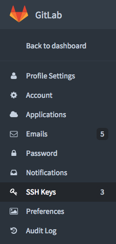
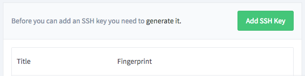
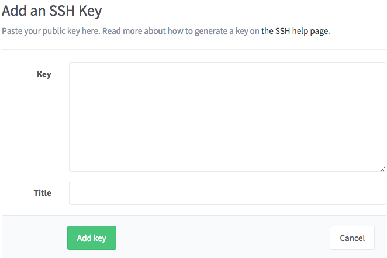

Check if Git is already installed
git --version
# If Git is installed the output will be similar to:
git version 2.3.8
# If Git is not installed the output will be similar to:
-bash: git: command not found
Add your Git username and set your email
git config --global user.name "Your Name"
git config --global user.email you@example.com
Verify your configuration information
git config --global --list
# Result:
user.name=Your Name
user.email=you@example.com
To interact with GitLab projects you will need to install the Git command line utility. This utility allows you to clone projects, push and pull code, and stay in sync with the central repository.
Use a command line interface (also called a terminal or shell) to run the commands on the right. Depending on your operating system, find the application of your preference. Here are some suggestions.
Check if you already have an SSH key
cat ~/.ssh/id_rsa.pub
# If you already have a key it will look something like this
ssh-rsa AAAAB3NzaC1yc2EAAAADAQABAAAEAQDVvUplNVHBJLyezQ/hq4yzETyXiwkgHZbet9q8ftp+TcputKd7V1NCOuHGjfIPWF1 you@computer-name
# If you do not have a key you will see an error like this
cat: /Users/you/.ssh/id_rsa.pub: No such file or directory
Generate a new SSH key pair if you received an error above
ssh-keygen -t rsa -b 4096 -C "you@computer-name"
# You will be prompted for the following information. Press enter to accept the defaults. Defaults appear in parentheses.
Generating public/private rsa key pair.
Enter file in which to save the key (/Users/you/.ssh/id_rsa):
Enter passphrase (empty for no passphrase):
Enter same passphrase again:
Your identification has been saved in /Users/you/.ssh/id_rsa.
Your public key has been saved in /Users/you/.ssh/id_rsa.pub.
The key fingerprint is:
39:fc:ce:94:f4:09:13:95:64:9a:65:c1:de:05:4d:01 you@computer-name
SSH keys allow you to interact with GitLab using the Git command line tool. Instead of using your username and password, the SSH key will securely authenticate you. You will need to complete these steps on each computer you want to use with GitLab.
Before you can add your public key to your GitLab account you need to check if you have an SSH key pair. If not, you need to generate one.
Copy the contents of your SSH public key.
cat ~/.ssh/id_rsa.pub
Copy everything including the
ssh-rsaandyou@computer-nameparts.
# Example public key as output by the previous command
ssh-rsa AAAAB3NzaC1yc2EAAAADAQEL17Ufacg8cDhlQMS5NhV8z3GHZdhCrZbl4gz you@example.com
First, copy the contents of your SSH public key. Then, from the GitLab Dashboard click on “Profile Settings”

Click “SSH Keys”:

Click on the “Add SSH Key” button

Paste your SSH public key in the “Key” text area. The title will be added automatically. Click “Add key” to save your public key.

Now, you’ll be able to use Git over SSH.